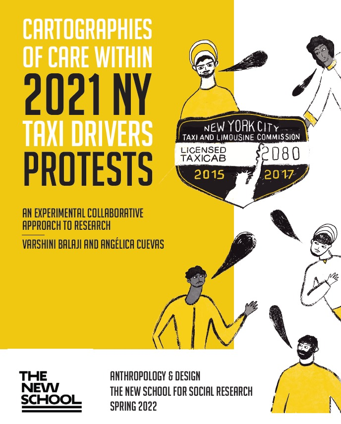

Projects
Research that centers people, uncovers possibilities, and translates into action.
Education Equity · Design Research
Center for New York City Affairs
Context
I worked with the Center for New York City Affairs to improve the FAFSA application process for students in vulnerable conditions, specifically first-generation students and students with undocumented parents.
Approach
I conducted user interviews with counselors, parents, and students to inform the development of a website by translating key insights into strategic recommendations such as language translation, use of visual aids, and a clear FAQ section to create engaging and condensed resource guides that directly support students applying for FAFSA.
Mixed-methods research · Strategy · Organizational inclusion
Mann: NGO for People with Intellectual Disability
Context
I partnered on a global research project, working with an organization, Mann, that provides vocational training and job placement services for individuals with intellectual and developmental disabilities (IDD). The project was focused on two key research questions: a) How are employees with IDD experiencing the workplace? and b) Are they in a work environment that provides sufficient resources, accessibility, and accommodations they need to succeed?
Approach
Using a mixed-methods ethnographic approach, I engaged people with intellectual disabilities, job coaches, caregivers, and managers to explore how competing definitions of "success" and "independence" shape workplace outcomes. My contributions included multilingual translation and transcription, thematic coding, and co-authoring a findings report with actionable recommendations for workplaces nationwide.
Design research · Impact storytelling
New York Taxi Workers Alliance
Context
In 2021, the New York Taxi Workers Alliance (NYTWA) staged a 15-day hunger strike to demand relief from crushing medallion debt, a crisis that devastated the incomes of thousands of taxi workers following the rise of rideshare apps and claimed the lives of several drivers by suicide. The hunger strike was led by current New York City Mayor Zohran Mamdani, who at the time was serving as a New York State Assemblymember.
Approach
Through one-on-one interviews with taxi drivers and union leaders, I applied thematic coding to surface narratives most likely to resonate with broader public audiences. I authored the full project narrative, grounding it in an individual case study woven together with wider research findings, and co-designed participatory workshop activities that brought drivers and union leaders together to identify practices of mutual care and solidarity.

View PDF →Education · Research · Organizational inclusion
Book: How To Be an Inclusive Leader
Context
I co-authored (with Karen Dahms and Jennifer Brown) the second edition of How To Be an Inclusive Leader, a book helping leaders and managers build inclusive, equitable teams and organizations by moving beyond theory into action.
Approach
I co-developed a four-stage continuum (Unaware, Aware, Active, Advocate) that guides leaders through examining their own biases, privilege, and influence. Grounded in real and relatable stories, the book translates personal reflection into clear strategies leaders can implement across each stage, ultimately helping them build organizations centered around trust and equity while driving better business results.
 View book →
View book →
Ethnography · Impact Storytelling
People as Infrastructure: Migrant Labor and Solidarity in the Middle East
Context
I conducted ethnographic fieldwork across the Middle East and South Asia with low-income migrant workers to document their labor conditions and the ways they build community under precarious circumstances. This project was funded by the Zolberg Institute on Migration and Mobility and the India China Institute.
Approach
Drawing on in-depth interviews, focus groups, and participant observation, I gathered comprehensive data on their lived experiences. Interviews were conducted across multiple Indian languages, allowing for deeper engagement with participants in their native tongues. Through this rigorous process, I uncovered how the collapse of formal infrastructural networks gives rise to a profound reordering, one in which people themselves become the infrastructure, sustaining one another through monetary support, care, and solidarity.
 View Site →
View Site →